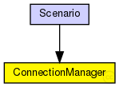

This documentation is released under the Creative Commons license
This documentation is released under the Creative Commons licenseModule to control all connection related stuff
The central module that coordinates the connections between all nodes, and handles dynamic gate creation. ConnectionManager therefore periodically communicates with the mobility module and ChannelAccess.
The value maxInterfDist used here in ConnectionManager defines the upper bound of any transmission, i.e. it can be redifined in the analogue models, but never such that the maximal interference distance is exeeded.
Author: Steffen Sroka, Daniel Willkomm, Karl Wessel, Alexander Brummer, Christoph Sommer
See also: MobilityBase
The following diagram shows usage relationships between types. Unresolved types are missing from the diagram. Click here to see the full picture.
| Name | Type | Description |
|---|---|---|
| Scenario | network | (no description) |
| Name | Type | Default value | Description |
|---|---|---|---|
| sendDirect | bool |
send directly to the node or create separate gates for every connection |
|
| maxInterfDist | double |
maximum interference distance [m] |
|
| drawMaxIntfDist | bool | false |
should the maximum interference distance be displayed for each node? |
| Name | Value | Description |
|---|---|---|
| class | veins::ConnectionManager | |
| display | i=abstract/multicast |
This documentation is released under the Creative Commons license